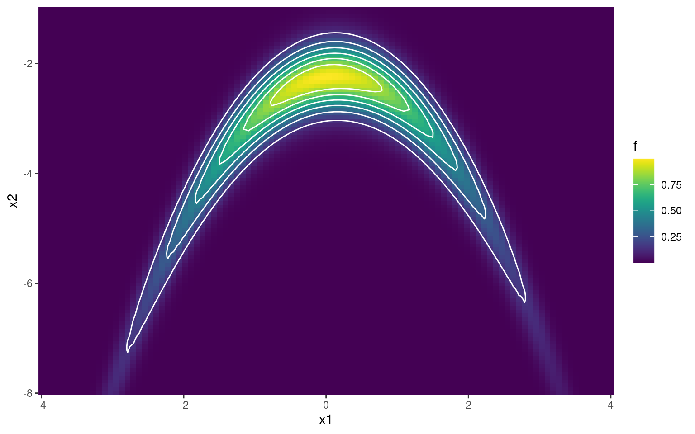

El algoritmo de Metropolis-Hastings (MH) permite generar muestras (pseudo-)aleatorias a partir de una distribución de probabilidad \(P\) que no necesariamente pertence a una familia de distribuciones conocida. El único requisito es que se pueda evaluar la función de densidad (o de masa de probabilidad) \(p^*(\theta)\) en cualquier valor de \(\theta\), incluso cuando \(p^*(\theta)\) sea impropia (es decir, incluso aunque sea desconocida la constante de normalización que hace que la integral en el soporte de la función sea igual a uno).
Escriba una función que implemente el algoritmo de Metropolis-Hastings para tomar muestras de una distribución de probabilidad unidimensional a partir de su función de densidad. Separe en funciones cada uno de los pasos del procedimiento. Otorgue flexibilidad al algoritmo permitiendo elegir entre un punto de inicio arbitrario o al azar y utilizar distribuciones de propuesta de transición arbitrarias (por defecto, se utiliza una distribución normal estándar).
La distribución de Kumaraswamy es una distribución de probabilidad continua que se utiliza para modelar variables aleatorias con soporte en el intervalo \((0, 1)\). Si bien graficamente la forma de su función de densidad puede hacernos recordar a la distribución beta, vale mencionar que la distribución de Kumaraswamy resulta en una expresión matemática cuyo cómputo es más sencillo:
\[
\begin{array}{lr}
p(x \mid a, b) = a b x ^ {a - 1} (1 - x ^ a)^{b - 1} & \text{con } a, b > 0
\end{array}
\]
Grafique la función de densidad de la distribución de Kumaraswamy para 5 combinaciones de los parámetros \(a\) y \(b\) que crea convenientes.
Utilizando la función construida en el punto 1, obtenga 5000 muestras de una distribución de Kumaraswamy con parámetros \(a=6\) y \(b=2\). Utilice una distribución de propuesta beta. Tenga en cuenta que la misma se puede parametrizar según media \(\mu = \alpha / (\alpha + \beta)\) y concentración \(\kappa = \alpha + \beta\).
Compare las cadenas obtenidas al utilizar tres diferentes grados de concentración en la distribución de propuesta. Calcule la tasa de aceptación. Compare utilizando histogramas y funciones de autocorrelación (puede utilizar la función acf o escribir una función propia). Para elegir el punto inicial del algoritmo de MH, obtenga un valor aleatorio de una distribución conocida que crea conveniente.
Utilizando cada una de las cadenas anteriores, compute la media de la distribución y los percentiles 5 y 95 de \(X\) y de \(\mathrm{logit}(X)\).
Considere un experimento binomial a partir del cual se quiere determinar la probabilidad de éxito \(\theta\). Se realiza el experimento y se obtienen 8 éxitos en 13 intentos. Obtenga la distribución a posteriori de \(\theta\) si la creencia a priori viene dada por
Obtenga muestras utilizando 6 cadenas independientes que partan de diferentes puntos inciales. Estudie gráficamente la convergencia y, en caso de ser necesario, descarte muetras iniciales. Además, estime el tamaño efectivo de muestra (\(ESS\) o \(N_{eff}\)) y el MCSE de la media a posteriori de la probabilidad de éxito. Concluya sobre la bondad de la aproximación obtenida de la distribución a posteriori y su media.
Metropolis-Hastings en 2D
Como veremos en esta sección del trabajo práctico, la verdadera utilidad del algoritmo de Metropolis-Hastings se aprecia cuando se obtienen muestras de distribuciones en más de una dimensión, incluso cuando no se conoce la constante de normalización. Paradójicamente, los ejemplos trabajados a continuación también serán los que nos permitirán advertir sus limitaciones y motivarán la búsqueda de mejores alternativas.
La distribución normal multivariada es la generalización de la distribución normal univariada a múltiples dimensiones (mejor dicho, el caso en una dimensión es un caso particular de la distribución en múltiples dimensiones). La función de densidad de la distribución normal en \(k\) dimensiones es:
Escriba una función que implemente el algoritmo de Metropolis-Hastings para tomar muestras de una función de probabilidad bivariada dada. Separe en funciones cada una de los pasos del algoritmo. La probabilidad de salto será normal bivariada de matriz de covarianza variable (utilizar para ello la función rmvnorm del paquete {mvtnorm}). Otorgue flexibilidad al algoritmo haciendo que reciba como argumento la matriz de covarianza de la probabilidad de transición.
Utilice la función escrita en el punto anterior para obtenga muestras de una distribución normal bivariada con media \(\boldsymbol{\mu}^*\) y matriz de covarianza \(\Sigma^*\). Determine una matriz de covarianza que crea conveniente para la distribución de propuesta. Justifique su decisión y valide la bondad del método mediante el uso de traceplots y las estadísticas que crea adecuadas.
La banana de Rosenbrock, funciones para hacer benchmark en optimizacion, etc.
https://en.wikipedia.org/wiki/Rosenbrock_function
Obtencion de muestras, evaluación del proceso de muestreo.
calculo de probabilidades con lsa muestras
calculo de probabilidades en base a grilla, comparacion y conclusión.
library(ggplot2)library(dplyr)f <-function(u, v) { a =1.75 b =0.5 x <- u / a y <- v * a + a * b + (u ^2+ a ^2)exp(-(x ^2- x * y + y ^2))}x1 <-seq(-4, 4, length.out =100)x2 <-seq(-8, -1, length.out =100)data <- tidyr::crossing(x1 = x1, x2 = x2)data |>mutate(f = purrr::map2_dbl(x1, x2, ~f(.x, .y))) |>ggplot() +geom_raster(aes(x = x1, y = x2, fill = f)) +stat_contour(aes(x = x1, y = x2, z = f), col ="white", bins =7) +scale_x_continuous(expand =c(0, 0)) +scale_y_continuous(expand =c(0, 0)) + viridis::scale_fill_viridis()

Función de densidad de la que se desean obtener muestras
Apéndice (para mover a teoría)
Algoritmo de Metropolis Hastings
Se desea generar una muestra de valores \(\{y^{(1)}, y^{(2)}, \cdots, y^{(n)} \}\) a partir de una distribución de probabilidad \(P\) con función de densidad \(p\).
Seleccionar un punto inicial \(y^{(1)}\).
Para cada \(t\in \{1, \cdots, n\}\), repetir:
Proponer un nuevo valor
Obtener un valor aleatorio \(y'\) de una variable \(Y'\) cuya distribución está dada por la distribución de propuesta \(Q\) y el valor de la última muestra obtenida:
\[
Y' \sim Q(y^{(t)})
\]
Calcular la probabilidad de aceptación
Calcular el cociente entre la función de densidad en el punto propuesto y en el punto actual. La probabilidad de aceptación es igual a este cociente si es menor a 1, caso contrario es igual a 1.
donde \(q\) es la función de densidad de la distribución de propuesta.
Esta se simplifica a la expresión utilizada en el algoritmo cuando \(q\) es una función simétrica alrededor de su media.
Effective sample size (ESS)
El número efectivo de muestras \(N_{eff}\) es el número de muestras independientes que tienen el mismo poder de estimación que \(S\) muestras correlacionadas.
Notar que la suma infinita del denominador empieza en \(k=1\) (y no en \(k=0\), donde \(ACF(0)=1\)). Además, en la práctica, una regla para truncar la \(ACF\) es hacerlo a partir del primer \(k\) valor donde \(ACF(k)<0.05\)(Kruschke 2014, 184).
Montecarlo standard error (MCSE)
Por el Teorema Central del Límite sabemos que, si \(\bar{X}_N\) es el promedio de \(N\) observaciones independientes e idénticamente distribuidas, entonces \(\sqrt{N}(\bar{X}_N-\mu)\) converge en distribución a \(\mathcal{N}(0,\sigma^2)\) cuando \(N\) tiende a infinito, donde \(\mu\) es la media de la distribución de las \(X_i\) y \(\sigma\) es su desvío estándar. Si \(\sigma\) se estima por \(\hat{\sigma}\), el término \(\frac{\sigma}{\sqrt{N}}\) se conoce como error estándar.
Cuando se realiza integración por Montecarlo y se estima \(\mathbb{E}({X})\) con \(N_{eff}\) muestras dependientes que se comportan como \(N\) muestras independientes, el error estándar se aproxima por: \[
MCSE = \frac{\hat{\sigma}}{\sqrt{N_{eff}}}
\]
Referencias
Kruschke, John. 2014. Doing Bayesian Data Analysis: A Tutorial with R, JAGS, and Stan. 2nd edition. Academic Press.